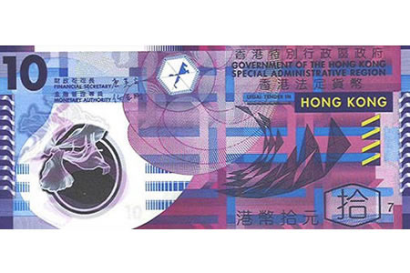
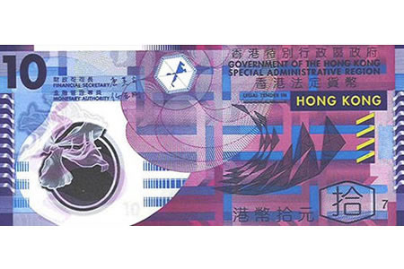

张东的博客
一个真正的旅行家必是一个流浪者，经历着流浪者的快乐、诱惑和探险意志

一个真正的旅行家必是一个流浪者，经历着流浪者的快乐、诱惑和探险意志
2017年，随项目入驻深圳，海关的那边就是香港。虽然是一个国家，却要先办了签证才能过海关。五一趁劳动节放假，背上行囊，来一个香港三日游（准确说是两天半）。我是从深圳的福田口岸过的海关，这里去香港可以坐港铁直达九龙、香港岛，需要大概40分钟的车程。第一件要做的事不是别的，正是兑换港币。到了地铁站，会有很多兑换点，可以说还是挺方便的。香港消费水平是高于内地一线城市的，所以可以适当多带一点。当然如果不想随身多带现金，到了香港就算使用银联卡也能很方便的从取款机取到钱，而且满大街都是做兑换生意的，只是可能会略贵一点。当然如果有需要也可以在地铁站买八通卡，充值的八通卡几乎可以代替现金。

港币（HKD）是香港的通用货币，在香港一般不直接使用人民币。港币纸币面值有十元、二十元、五十元、一百元、五百元、和一千元，一港元大概等于八九毛人民币吧（2017年）。看着商品标价都是一个个的$符号，但是买起东西来完全不手软，毕竟虽然都是刀，但是跟美刀确实相去甚远。其中，不得不说面值十元的港币确实漂亮，难怪被《金钱的艺术》一书的作者评为世界十大最漂亮纸币之一，不常使用港币的话，存一张以作收藏也是很不错的。
大概四十分钟的港铁，从深圳福田口岸一直到九龙油麻地。油麻地属于香港油尖旺区，油麻地地铁站在荃湾线上，位于旺角和佐敦之间。出了地铁，上世纪的旧建筑围成的街道出现在眼前。这里的楼房每一栋单独来看都有一种非常老旧的感觉，好像时代已经完全把它原有的光华掩埋，但也正是这一栋栋老旧的建筑，组合出了我印象中最纯正的香港味道。香港的街道虽然旧，但是整齐，虽然窄，但是井然有序。在香港宽阔的道路不多，我见过最窄的道路，窄到只允许一辆车通过，等红灯时候几乎都能清晰地看清对面行人手表的轮廓。就是在这种道路上，人们都严格按照交通信号的指示通行，斑马线上的绿灯不亮人们都自觉地等待。这么窄的街道我能想象出在内地是怎样一番景象。（也许只是个巧合？）
我住的地方就在油麻地，放下行李之前，我打算去一个地方。油麻地警署，香港警务处于西九龙总区油麻地分区的警署。我不是TVB迷，因此这里也仅仅是慕名而来。这是一栋殖民地建筑，楼高三层，有传统的圆柱门廊。2016年5月21日晚上6点，香港油麻地警署举行了最后一次降旗仪式。作为九龙服役最久的警署，油麻地警署自此正式闭所，今后只作为报案中心使用。也正是因为这样，香港又多了一处风景。


有幸看到两位正在执勤的阿sir，不得不承认还是很酷的。

我住的地方在著名的弥敦道上，一幢叫平安大楼的楼里面，是一个青旅。这真的是一个失误，也是我住过最贵的青旅。由于订票时间太晚，又是黄金周，香港的旅店想买到票都不容易。这附近就有著名的庙街（→_→洪兴的地盘）。本想就在附近，哪天晚上去逛逛，然而计划不周全最终也没去成，旅行总是会有遗憾，有点遗憾的旅行才算完美不是吗？
稍事休息，整理行囊，出了旅店，我沿着弥顿道一路向南，目标：维多利亚港。
途中经过了一个特别的地方。重庆大厦，弥敦道36－44号。没错，就是那栋因为王家卫导演的《重庆森林》声名远播的重庆大厦。虽然理论上重庆大厦是一座住宅大厦，但事实上却变成了一座混合型大厦，拥有很多廉价宾馆、商店、食肆、外汇兑换店及其他服务行业。大厦内的约4000个住客中，主要是香港的少数族裔人士，以印度和巴基斯坦等南亚裔人士、以及来自不同非洲国家的人士最多。大厦门口站着很多阿三哥，我猜他们是在招揽生意。重庆大厦的出名可不仅仅因为《重庆森林》，同时也因为这里的混乱。这里可以用城市“心脏”的贫民窟和“联合国”大厦来形容。这里有政治犯、非洲商人，也有身无分文的穷鬼。说到一般人提及重庆大厦的关键词：强奸、谋杀、肮脏、三教九流、复杂混乱、不安全。也因为这些，重庆大厦成了一个令人生畏的地方。当初订旅店的时候，其实重庆大厦是有很多实惠的单人间、标间的，但是有谁又敢住在这样一个臭名昭著的地方呢？我想只有那些不得不选择住在这里的人了吧。

弥顿道的尽头就是维多利亚港。说来也不巧，本来维多利亚港旁边就是星光大道，那里是跟好莱坞星光大道有着异曲同工之妙的地方，可惜2015年10月8日起星光大道正式关闭，施工直到2018年年底才能完工。这也算第二个遗憾吧。
还未到达港口，已经听到游船的声音的，循声望去，是一片的开阔，虽然港口也一片忙碌，却不见九龙的喧嚣和拥挤。维多利亚港的名字，来自英国的维多利亚女王。由于维港港阔水深，是天然的良港，香港也因此而有“东方之珠”、及“世界三大夜景”的美誉。2005年10月23日，由《中国国家地理》主办的“中国最美的地方”评选活动还将维多利海湾评为中国最美八大海岸之一（目前为止已经完成成就：中国最美八大海岸4/8。Y^_^Y）。白天的维港景色没有那么惊艳，到了晚上，海面披上了五光十色的外衣之后，展现给人们的绝对不会辜负世界三大夜景这个美誉。建议可以体验一下晚上乘坐天星小轮欣赏维多利亚港的夜景，我认为那才是维多利亚港正确的打开方式。

未完待续……
有事的话可以留言或者联系我
+86 152 1058 2652
568892758
568892758@qq.com

 

{kind=link}
{kind=link}
{kind=link}
{kind=link}
{kind=link}
{kind=link}
{kind=link}
{kind=link}